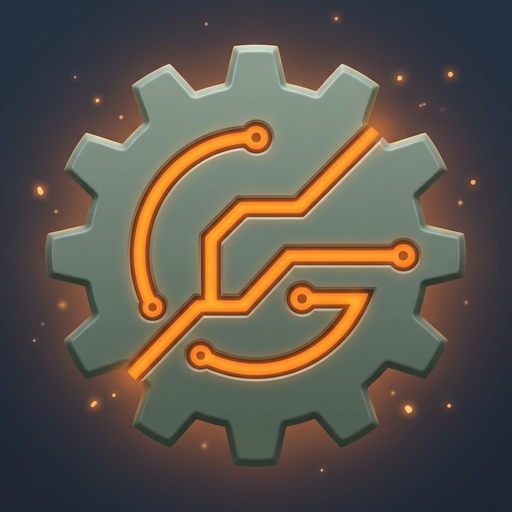
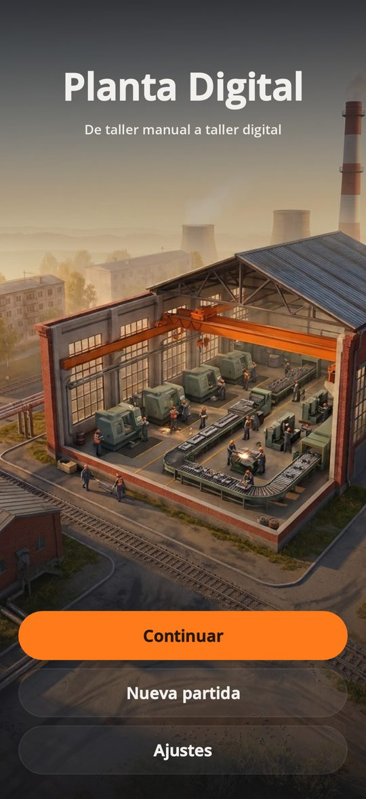
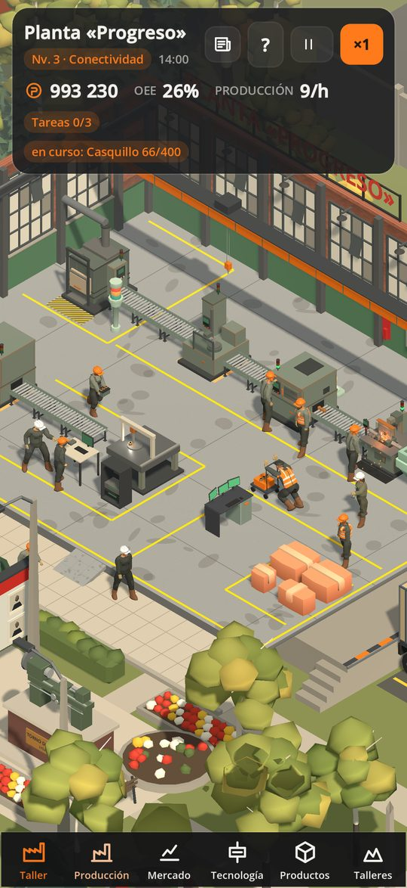
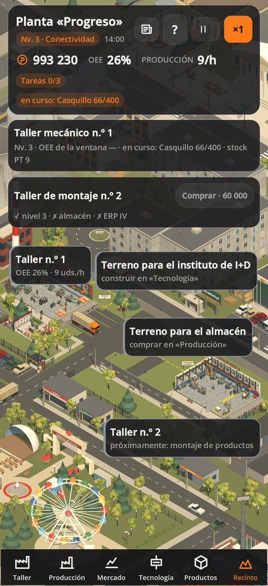
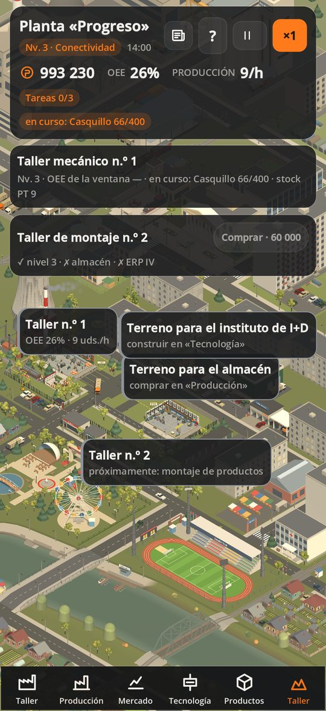
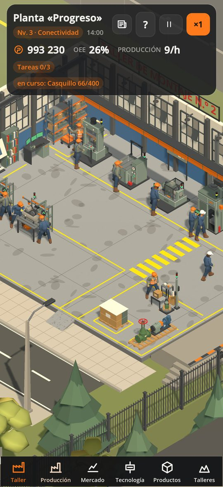
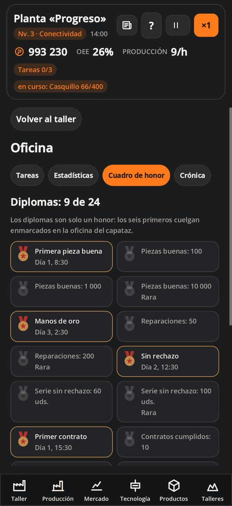

Fábrica Digital
Del taller manual al digital
Simulador de fábrica para iPhone: sin conexión, sin anuncios, sin compras dentro del juego.
Próximamente en el App StoreEl enlace aparecerá tras el lanzamiento.
- Sin conexiónno necesita red
- Sin anunciosni compras dentro
- 3 idiomasрусский, English, español
- iPhone12 y posteriores, iOS 17
Fábrica Digital es un simulador de fábrica para iPhone. Te haces cargo de un pequeño taller mecánico que todavía funciona a mano: una sierra, una máquina CNC, reparaciones por aviso, pedidos en un cuaderno. Paso a paso lo conviertes en una fábrica digital, donde SCADA, MES y ERP llevan las máquinas, los pedidos y las compras.
Pones pedidos en cola, compras piezas en bruto, reparas máquinas, vigilas el OEE (la parte del tiempo de tu línea que es útil), aceptas contratos y vendes piezas en el mercado. El dinero va a tecnologías de tres proveedores, al almacén del recinto, a tu propio instituto de I+D y a un segundo taller de montaje. Por el camino te esperan tareas de turno, la crónica de la fábrica y los diplomas del cuadro de honor de la oficina.
El taller está vivo: los operarios recorren su turno, la grúa mueve piezas y al anochecer se encienden las luces. Al otro lado de la valla hay una ciudad industrial con autobús, coches y un tren de mercancías. El juego funciona sin conexión, no muestra anuncios y no vende nada dentro: lo compras una vez y juegas. Las partidas se guardan solo en tu teléfono. Ruso, inglés y español.
Capturas de pantalla





